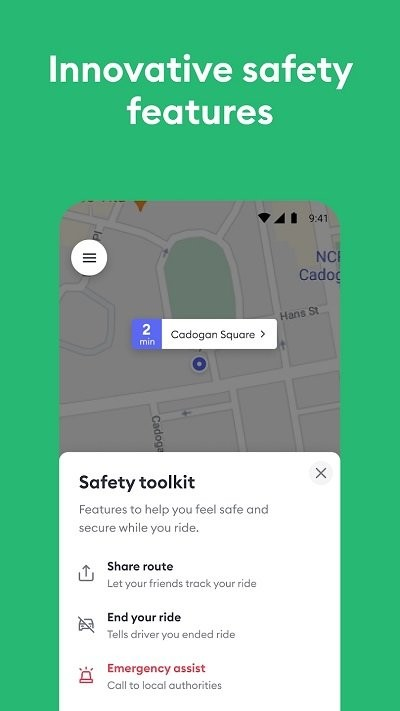

维尔纽斯深夜那趟绕路的车——我是怎么把钱要回来的
去年冬天去立陶宛出差，落地维尔纽斯已经快午夜了。第一次用 Bolt 打车就碰上司机绕路，靠行程记录和投诉渠道，两天后车费全额退了回来。
落地维尔纽斯，午夜叫的第一辆车
去年 12 月我去立陶宛做三天商务对接，飞机在维尔纽斯机场落地的时候是晚上 11 点 40 分。机场打口的的士司机都在排队等客，我本来想直接上，同行的老杨捅了我一下——他之前来东欧跑过项目，说这边的本地司机专挑深夜下飞机的外国人绕路，"打 Bolt，按平台价算，绕路有记录。"
Bolt 在北欧是国民级打车应用，爱沙尼亚、拉脱维亚、立陶宛这波罗的海三国就是它的发家地。我之前只在国内听过名字，掏出手机在官网下了一个，填好酒店地址就叫了车。两分钟后一辆灰色的斯柯达明锐停过来，车牌和应用里显示的一模一样，司机是个四十来岁的本地大叔，笑起来露出一颗金牙。

他在反方向开，我盯着地图心跳加速
上车的时候导航显示酒店离机场大概 18 公里，预计 35 分钟到。我把安全带系好，低头回了条微信给明天开会的同事，再抬头看地图——车子已经开过了应该转弯的那个路口，朝反方向去了。
"师傅，是不是走错了？"我用英语问了一句。司机转过头用立陶宛语咕噜了两句，然后继续往前开。我不太确定他是没听懂还是在装听不懂，赶紧打开应用里的行程跟踪——地图上我的蓝点明显在往维尔纽斯老城区之外跑，离酒店越来越远。
这时候我想起之前翻bolt文档看过的安全 FAQ：疑似绕路先礼貌确认，确认偏离立即使用行程分享。我打开安全工具箱，把实时行程通过 WhatsApp 发给了老杨，附了一句"我好像被绕路了，司机听不懂英语"。老杨那边秒回："别下车，坐在后座，我盯着地图，有事直接点 SOS。"

三公里的绕路，事后全额退了
车子又开了三公里才掉头，最后比预计时间晚了 25 分钟到酒店。下车的时候司机还在笑，我没跟他多扯，进了酒店大堂先给同事报了平安，然后打开应用内的投诉通道。
投诉界面很清楚：选"司机绕路"，填了我观察到的情况，然后提交。平台给的反馈速度比我预想的快——第二天一早收到邮件，说已核实行程记录，司机确实偏离了导航路线 4.2 公里。第三天下午，车费全额退回了我的信用卡。
这件事让我对 Bolt 的几个设计有了实感：所有行程都被平台跟踪并记录，这不是一句空话；投诉的时候不需要我自己找证据，行程轨迹、停留时间、路线偏差这些数据平台后台都有；绕路的司机低评分多了，平台会直接影响他的接单资格。
后来在非洲用它更安心
这次出差之后没过两个月，我去肯尼亚内罗毕做项目。老杨说那边本地打车更黑，还是用 Bolt。我在应用上搜了一下，内罗毕是 Bolt 在非洲的核心市场之一，除了打车还支持外卖和滑板车。下载安装走的是老路子，从官方下载拿包，整个过程不到三分钟。
在内罗毕那几天，无论是从酒店去会议中心还是晚上去机场，我养成了三个习惯：上车前先核对车牌和司机姓名、行程全程开着导航地图、夜间行程主动分享给同事。回来之后我才知道，Bolt 的安全工具箱和行程记录功能在全球市场是统一覆盖的，不管你在欧洲还是非洲，规则和保障是一套。
一点事后复盘
那次绕路事件过去快一年了，回头看我觉得最重要的不是要回了那几十欧元，而是三件事：第一，深夜落地陌生城市别打路边黑车，哪怕贵几块钱也用平台；第二，别觉得"绕路一点很正常"就忍了，平台有记录就是你的依据；第三，出行分享功能真的要主动用——老杨那端盯着地图，我在车里的心态完全不一样。
Bolt 的中文文档里把这些安全功能写得很细，从上车前对车牌、行程中安全工具箱、紧急 SOS 按钮，到事后投诉渠道，每个环节都有对应的操作说明。我后来闲下来翻了一遍，发现还有几个我在内罗毕没用到的功能，比如夜间自动提醒行程分享、儿童座椅预约等，下次再去非洲出差说不定用得上。
这次出差用到的所有资料和文档我都整理过了，顺手也在几个开源仓库里放了一份——GitHub上的版本更新最快，如果在国内访问不方便，Gitee和GitCode那边也做了同步备份。